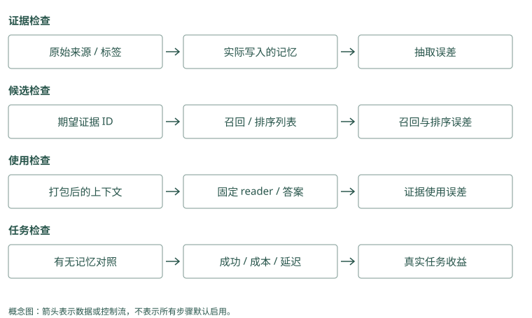

如何正确评测 Agent Memory
把“感觉更聪明了”变成能检查的问题
发布助手加了记忆后，回答更长、更像懂项目，仍可能漏跑迁移检查。我们需要事先定义成功：“在 Atlas 正式发布前，找到正确规则并执行检查；演练时不误改默认；证据不足时不编造批准人。”
先准备几条真实问题及支持答案的原始记录。比如“谁批准 Atlas 发布”需要文档 A 的所属团队和文档 B 的批准人，两条都是必要证据。这个人工确认的集合常叫 gold，也就是参考标准，不是模型自动宣布的真相。
Mem0：测试题问“Atlas 发布前检查什么”，预期依据是迁移教训。检查系统是否查回并传入它，而不是只看最后一句碰巧写对。
Graphiti：测试题问“谁批准 Atlas”，预先标出维护和正式批准两份证据。答出 Lin 但只用了出差关系，仍不能算通过。
源码与边界（选读）
Gold 是测试题预先标出的必要证据与答案。问 Atlas 批准人，Mem0 的必要证据可能是维护和批准两张卡；Graphiti 的必要证据可能是两条边与两份来源。模型重新抽取会换编号，所以测试应说明是哪件事实支持答案，不能只要求命中上次随机生成的编号。
Mem0：gold 应关联源事实，不只关联生成 ID
提取可能把同一原话拆成多张卡，随机 memory_id 不能直接跨实验比较。标注 source 与所需陈述，检查输出是否保留主语、时间和条件，再映射到候选 ID。若只凭“答案含 Lin”计分，错误团队里的 Lin 也可能被算成功。
Graphiti：gold 应包含规范对象与支持关系
批准链需要 Atlas 所属团队边和该团队批准人边，且中间身份相同、日期有效。标注 episode 来源与关系语义，而非图节点总数。节点 Lin 出现却没有正确批准边，不能算证据完整。
一次问题，分四个位置检查
先看写入：A、B 有没有保存，提取是否把批准人写错。再看检索：A、B 有没有进入候选和最后结果。接着看使用：最终模型输入是否包含它们，回答有没有沿正确关系引用。最后看任务：真实执行是否遵守批准和检查流程。
如果最终答案碰巧正确，但没有引用库里的证据，模型可能只是猜对或从别处知道；这不能单独证明记忆有效。若证据都正确而工具执行错，继续提高检索分数也未必解决问题。
Mem0：最终忘了迁移检查，分别看存下的教训、搜索返回、发送消息和助手计划。若发送消息没带教训，先修组装，不必换提取模型。
Graphiti：答错批准人，依次看关系是否连对、查询是否找到、原文是否提供、模型是否读对。在哪一层错，就针对那一层修。
源码与边界（选读）
错误答案可能来自写错、没找到、没放进输入或读错。Mem0 分别留提取正文、候选编号、组装文字与动作；Graphiti 还留对象身份和被结束的旧关系。这样看到“Mei”答错时，能区分批准人未存下、旧 Lin 未过滤和模型忽略新证据，而不是统称记忆效果差。
Mem0：四层各留一份中间结果
写入保存 extracted text 与 metadata，检索保存 semantic、keyword 和最终结果 ID，组装保存 packed ID，任务保存当前检查工具行为。只看 search 返回正确句子，可能忽略 extractor 已把“用户猜测”变成断言。
Graphiti：写入还要核对错误失效
记录规范节点 UUID、new edges 和 invalidated edges；查询记录 config 与结果来源；组装和工具使用由宿主记录。一条正确新边伴随三条错误失效旧边，也不能算写入成功。分别计分后才看最终答案。
用集合算一次召回率
假设必要证据是 A 和 B，检索返回 A 和 C。我们命中一个必要证据，漏一个，还混进一条无关内容。
gold = {"A", "B"}
returned = {"A", "C"}
hits = gold & returned
recall = len(hits) / len(gold)
precision = len(hits) / len(returned)
print(recall, precision) # 0.5 0.5召回率回答“该找的找到了多少”，精确率回答“返回的有多少是对的”。返回更多内容可能提高前者，却降低后者并增加输入费用。项目写 Recall@5 时，至少要确认“前 5 条”“命中”以及“必要证据单位”怎样定义。有的实验只要求任意一条正确 session 出现，不能和两条必要来源都到齐的指标当成同一个分数。
Mem0 的短事实、Graphiti 的事实边、HippoRAG 的段落和 Basic 的笔记形状不同，比较时要通过来源映射回共同的证据标准。否则摘要很准确，却只因 ID 形状不同被判漏；或内容看似正确却没有来源，被误判为命中。
Mem0：题目需要迁移要求 A 和审批要求 B，返回 A 和会议记录 C。必要两条只找到一条，召回率是 1/2；C 不因为排得高就算正确。
Graphiti：批准链需要维护边 A、批准边 B，只查到 A 也只完成一半。返回很多无关边，不能补足缺失的 B。
源码与边界（选读）
必要证据是 A、B，返回 A、C，召回了两件里的一个；但 Mem0 一张长卡也可能同时含 A、B。Graphiti 一条边与支持它的原文同样不是两件独立事实。计算召回前先固定计数单位，明确数的是必要事实、记录还是材料，否则数量相同的结果会被误判成相同覆盖。
Mem0：一张卡可能覆盖多个 gold 要素
短事实合并了 A、B 的结论时，应核对 source 是否同时支持两部分，再决定证据覆盖。没有来源的正确猜测不能计为可靠召回。结果条数少并不自动精确率高，先固定相关单位是原事件、陈述还是支持材料。
Graphiti：边与 episode 的召回要区分
fact 返回可覆盖一个关系要素，episode 返回可能同时支持多个事实。基础 search 与组合 search_ 返回不同对象，不能仅用对象 ID 交集评判谁强。统一映射到必要来源和关系，再比较 recall、precision 与 token。
怎么知道是新机制带来的改善
先用不带记忆或只带最近消息的方案作为 baseline，也就是对照起点。接着固定同一批数据、同一回答模型、同一提示和输入预算，只改变一个机制。
例如先比较关键词和混合检索，再在相同候选上加重排；试图判断 PPR 的价值时，保持 reader 不变，比较 dense 与图传播。Reader 在这里是读证据并生成回答的模型。若换了 reader 又加大输入，不容易把改善归给图。
给每个实验新建状态，按真实时间顺序写入。Hippo 的强化、MemoryOS 的提升、A-MEM 的描述更新和 Letta 的规则编辑都会改变以后状态，不能让实验 B 继承实验 A 试题产生的反馈，也不能提前写入未来纠正。
Memobase 和 MemOS 有异步路径，还要明确读之前等不等处理完成。若一边等 flush、一边立刻查询，比较的可能只是可见窗口，而不是提取质量。
Mem0：用相同记录和十道题，一次不加关键词分，一次加分。其他设置不变，再比较漏检题，才能知道改善是否来自这项变化。
Graphiti：固定图和问题，只改变是否追加邻域查询。比较第二段批准关系是否补回，同时记录多带回多少无关关系。
源码与边界（选读）
消融测试就是只去掉或增加一种机制，观察差别。Mem0 可固定第一批候选，再比较对象加分开关；Graphiti 可固定同一图，再比较是否加邻域扩展。若同时换提取模型、候选数量和回答模型，即使答对更多，也无法解释是哪项带来了收益。
Mem0：把候选扩展和重排分别控制
同一事实库比较关键词信号开关、实体 boost 和可选 rerank，每次保留语义池 ID。外层 reranker 处理底层已截断结果，若同时改 limit，收益归因会混淆。提取算法实验使用全新库，避免旧卡已被人工修正。
Graphiti：固定 ingestion 后再比较搜索配方
先核验同一张图的实体与时间，然后比较 BM25、cosine、RRF、BFS 和 cross-encoder。若同时换 schema 与 reader，无法确定收益来自图扩展。重排模型、driver 与各路限额都记入实验配置。
先检查十个案例，再读大分数
记录每个案例的写入结果、候选 ID、最终输入、回答和工具动作。挑一个失败，沿四个位置查原因，修完后再跑全部案例。标注集稍大后，把调参数用的题与最终检查用的题分开，避免针对答案调到好看。
LoCoMo 和 LongMemEval 提供较大规模的会话问题，BEAM 关注更长上下文。它们帮助拓展覆盖，不替代你的演练例外、跨用户拒绝和删除检查。下面实现笔记解释这些数据与指标的不同协议，读之前先理解自己的一条问题怎么计分。
Mem0：先测默认语言、单次例外、迁移教训等十个实际案例。别人报告的高分不保证你这十题通过，尤其当模型和数据不同。
Graphiti：先测同名项目、批准人变更、缺一段证据等案例。逐题查看关系和原文，比先引用一个总分更能看清是否适用。
源码与边界（选读）
别人公布的分数还包含具体模型、资料、问题和回答预算。自建 Mem0 库若使用不同提取器，不能直接沿用托管成绩；Graphiti 若建图时已误合并平台组，搜索公式再好也可能答错。先逐题读原文、派生结果与答案，把十题失败原因写明，再判断大规模指标代表什么。
Mem0：本地评测不能直接领取托管分数
当前 OSS 有批处理事实、关键词和实体信号，并不证明包含 managed platform 的全部优化。试用先跑同义重复、语言例外、错误码、删除和 provider 故障，保存真实返回。项目自报 QA 分数只能按原协议引用。
Graphiti：建图正确率与回答率分开抽样
同名团队、晚到事件和未来变更测试可揭示 resolution 问题。框架和托管服务的 reader、上下文组织、数据管理可能不同，不能将托管论文数字当作所有本地配方保证。本书示意结果不代替真实运行。
一条测试题，应说明证据怎样支持答案
对“谁批准 Atlas 的正式发布”，可以把参考答案写为 Lin，并标明成立条件：A 证明 Atlas 属于平台组，B 证明 Lin 批准该组的正式发布，两份资料在查询日期有效。只记录名字，会让测试无法识别系统从另一团队资料猜中了同名人员的情况。
再加入一题“谁批准 Atlas 的采购”。如果库里没有采购批准资料，参考行为应是说明不足或继续查找。它与发布问题措辞很接近，却要求不同关系。这样的近邻反例能检查检索和 reader 是否只凭人名共现就答题，也能测系统在缺证据时是否愿意承认未知。
偏好测试同样需要时间顺序。“默认中文”“这封邮件英文”“今后英文”应产生不同的当前状态。如果把三句一次性装进库再问第一轮该怎样回答，系统已经看到了未来变更，测试就没有模拟真实记忆。按发生顺序写入，在每一步查询，才能检查更新是否在正确时点生效。
Mem0：题目问“15 日批准人”，预期答案 Lin，并附适用日期和来源。今天 Mei 的记录虽然更新，不能作为这题的依据。
Graphiti：预期证据是 15 日有效的维护关系与正式批准关系。若只给标准人名，不检查日期和用途，系统可能靠错误链碰巧答对。
源码与边界（选读）
一题问 15 日批准人，答案依据应写清当日维护对象、批准用途与有效时间。Mem0 卡片若只留最新文字，需要外层版本规则；Graphiti 若连到 Lin 却是出差审批，也不支持答案。加入这些相近反例，能检查系统是否真的理解限定，而不只是找到同样的人名。
Mem0：测试条件应保留业务有效时间
默认中文、邮件英文、永久英文按顺序写入，每轮查询当前语言并检查旧记录的解释。普通 ADD-only 不自动解决当前字段，评分之外还应测应用视图策略。缺失采购批准资料时要求 abstain，避免 reader 从相近发布事实猜答。
Graphiti：增加关系相近但用途不同的反例
Lin 批准出差与 Lin 批准发布可以共享人和团队节点，却应支持不同答案。参考条件包括边语义、有效窗口和来源。把未知问题纳入测试，检查图连到某个人时 reader 是否仍会承认证据不足。
小样本改善应该怎样解读
假设旧方案在十个问题里答对六个，新方案答对八个。这是值得继续检查的信号，却不应直接推广成“所有任务准确率提高二成”。先看新方案多答对了哪些题，是否也把某个原本正确的问题改错；再看这些题是否都来自同一种表达，或者恰好用于调参。
逐题对照通常比单个平均分更有帮助。若改善都来自错误码问题，可能是全文路径的收益；若第二跳题改善而历史题退化，可能需要限制图传播范围；若答案正确但成本翻倍，要判断这两次新增成功是否值得。保留失败类型，使后续选择有具体依据。
最后要把测试状态重置。一次查询会强化记录的系统，重复测相同题可能越测越好；能够编辑核心的 Agent，也可能把试题答案写入未来规则。每个对照使用独立初始状态，或明确研究的是重复学习过程。否则你测到的可能是上一轮考试留下的记忆，而非待比较机制的差别。
Mem0：十题从七题对变九题对，新增两题都只是搜回了漏掉的卡片。报告这一具体改善，再补新题，不直接宣布所有记忆问题都解决了。
Graphiti：新增答对两题，但两题都用同一条批准链。再测另一团队和一次历史变更，检查改善能否用于其他资料。
源码与边界（选读）
新版本多答对两题，先看具体是哪两题。Mem0 可能只是候选变多找到了旧漏项；Graphiti 可能补到了批准链，也可能同时引入错误身份。固定预算逐题比较成功与新失败，才知道改动是否适合当前负载。小样本提供改进线索，不足以宣称所有任务都受益。
Mem0：逐题比较漏提取、漏入池和漏使用
十题多对两题，先检查是否都是同一种关键词获益、是否有旧题退化。记录总 token 与提取成本，不能只看返回条数。测试反馈不应写回 baseline；显式更新后的卡片必须留在对应实验版本。
Graphiti：多跳改善要同时检查身份错误
BFS 补到第二跳后，若同名项目串线增加，平均 QA 可能掩盖安全退化。记录每题规范节点、被关闭旧边和路径来源。重建图使用相同事件顺序和模型版本，避免上次纠正改变这次对照。
动手检查
在一个假设实验中，必要证据全被召回，但 10 次任务有 4 次跳过检查。你下一步是加 embedding、扩大 top-k，还是查组装和执行？
答案提示：先查正确证据是否实际入输入，以及模型和工具流程是否遵守。还要比较不带记忆的对照成功多少，才能判断这 6 次成功是否带来增益。这是假设结果，本书没有重跑所有项目 benchmark。
实现笔记与源码对照（选读）
先拆开四种能力
- Extraction：该记的是否写入，是否产生幻觉。
- Retrieval：相关证据是否进入候选和 top-k。
- Utilization：reader/Agent 是否正确使用证据。
- Task improvement：有记忆是否让长期任务更成功、更便宜。
只测最终回答，会把四层错误混在一起；只测 Recall@5，又无法证明 Agent 真正变好。
常见 benchmark
LoCoMo
10 个超长多 session 对话，平均约 300 turns、9K tokens，任务含 QA、事件总结和多模态对话。适合测长期会话事实、时间和多跳。不同项目可能使用 evidence recall、F1/BLEU 或 LLM judge accuracy，数字不能直接并排。
LongMemEval
500 个问题，覆盖 information extraction、multi-session reasoning、temporal reasoning、knowledge update 与 abstention，历史可超过 115K tokens。需要明确：
_sper-question haystack 还是 pooled global store；- memory 单位是 turn 还是 session；
- R@k 还是 reader accuracy；
- 数据是否 cleaned；
- 是否在测试集调了 reranker。
BEAM 与项目自建评测
BEAM 面向百万/千万 token 规模，但不同实现可能采用不同 ingest、routing 和 judge。项目自建 DevBench、sequential-learning、PersonaMem 更贴近特定场景，但外部可比性较低。
指标矩阵
| 层 | 指标 |
|---|---|
| 写入 | precision/recall、重复率、冲突率、每轮 LLM 成本 |
| 候选 | Recall@k、coverage、permission leakage=0 |
| 排序 | MRR、NDCG、temporal correctness |
| 上下文 | token 数、证据密度、注入拦截率 |
| 回答 | exact/F1、引用正确、应拒答准确率 |
| 任务 | 成功率、返工 turns、总成本、长期学习曲线 |
| 系统 | p50/p95 延迟、写入积压、重建时间、删除 SLA |
最小可信实验
固定数据 + 固定 reader + 固定 prompt
A: 无记忆
B: 最近 N turns
C: BM25
D: dense
E: hybrid
F: hybrid + rerank/lifecycle每次只改一层，保存原始候选、排序分数和最终答案。LLM judge 应配合人工抽样；报告置信区间和失败案例；调参集与测试集分离。
每个项目需要自己的机制验收
下表是建议实验，不是已完成的复现。共同固定来源、query、reader 与预算，再针对项目真正改变的部分验收。
| 项目 | 最小机制实验 | 失败时优先检查 |
|---|---|---|
| Mem0 | BM25-only、entity-only 与语义近邻的候选对照，偏好变化输入 | semantic pool 边界、keyword 后端、去重/时间 |
| Memobase | flush 前后 profile 对比，单次例外与长期变更 | buffer 延迟、合并 prompt、原文保留 |
| Graphiti | 别名、同名不同人、晚到事件、历史查询 | node resolution、edge invalidation、reference time |
| Cognee | 同一语料固定 schema/loader，逐个替换 retriever | 分块、schema 覆盖、图/向量连接 |
| HippoRAG | dense 对照 PPR，标出第二跳 passage | OpenIE、种子、泛化节点、damping |
| MemoryOS | 关闭/开启短期提升和热段分析 | 摘要漏信息、session 合并、heat 阈值 |
| MemOS | 单独测 plaintext，再测兼容缓存与 adapter | cube 配置、scheduler 状态、模型兼容 |
| Hippo | 分别关闭 decay、recall boost、outcome、physics | 状态泄漏、错误强化、阈值与恢复 |
| A-MEM | 关闭 evolution/links，与直接近邻比较 | 描述漂移、邻居索引刷新、最终 k 截断 |
| Letta Code | 文件编辑未提交、提交未编译、已重新编译三状态 | commit、索引发现、core/deferred 分层 |
| Basic Memory | 改/重命名文件后查询，空索引重建 | sync、链接解析、原文件版本 |
| MCP Memory Service | weighted/RRF 分别测，模拟同步与 embedding 失败 | 过滤一致性、FTS、删除传播 |
| Agent Beacon | 已知工具轨迹在不同 harness 的事件覆盖 | observed/inferred、重复、事件关联 |
| TencentDB | 相同 query 在不同 ACL/Loadout 下的返回 | 身份校验、资产状态、Proxy 注入缓存 |
| Hermes Jev Skills | 危险相关段、敏感 query、截断与部分批失败 | local screen、unjudged、fallback 与 token |
MemGPT 的主动换入思想还应测“需要历史时是否真的调用工具”。旧 Letta 仓不是当前性能对象，只用于定位历史版本。不要拿这些不同中间指标直接排全局名次。
警惕饱和 benchmark
当 per-haystack R@5 接近 100%，继续优化 embedding 对真实全局库价值有限。更有区分度的测试是：
- 单一长期 store，不预先按问题分 haystack；
- 存在同名实体、过期事实和矛盾来源；
- 需要 abstain；
- 跨用户严格隔离；
- 记忆量持续增长；
- Agent 在第 40 个任务是否少犯第 5 个任务的错误。
真正 SOTA 应同时回答质量、成本、延迟、维护与安全，而不是只给一个分数。
用同一条 query 拆开错误归因
设标准证据有三条，某方法 top-5 只命中两条，则 evidence recall 是 2/3；若任务定义要求只要任一 gold session 命中，hit@5 又可能为 1。MRR 只关心第一条相关结果的倒数名次，NDCG 还依赖相关性等级与位置折扣。论文用哪个定义要记录，不能把所有 R@k 都当同一个百分比。
Mem0 的事实提取可能压缩原话，Graphiti 返回事实边，HippoRAG 返回 passage，Basic 返回笔记，MemoryOS 返回 page。比较召回时要把它们映射到共同 source IDs：摘要包含同一事实不能因为没有原始 turn ID 就一律判漏；摘要声称正确但来源错误也不能算证据命中。之后用固定 reader、prompt 与 token budget 比答案，避免长候选靠更多上下文赢。
对 Hippo 的 decay/outcome、A-MEM evolution、MemoryOS promotion、Cognee improve、Letta self-edit，采用时间顺序回放：写入与反馈只来自当前已发生的任务，评测下一任务时不能预先看未来纠正。每个对照使用全新 store/commit 分支，防止先前强化、watermark 或 Skill 更新泄漏进 baseline。
Memobase/TencentDB/MemOS 的异步链还要固定等待协议：是立即读、等 flush/队列完成，还是允许最终一致窗口。Basic 同步、Beacon 轮转/捕获和 MCP remote/backend 则测系统正确性，不能只用 QA 分数代替 coverage、零越权与删除 SLA。Hermes 的云判别和 Hippo reranker 应先在完全相同候选上比，再做端到端，才能区分召回收益和排序收益。

项目对照速查（选读）
本章对照结论
下表把已知评测材料与建议验收分开。未列统一分数不表示项目没有测试，只表示本书不将其当同一协议比较。
| 项目 | 本书讨论的评测/证据 | 应测的技术变量 | 不可直接比较的原因 |
|---|---|---|---|
| Mem0 | 论文与 README managed QA 分数 | OSS 提取、池边界、reader | 托管专有优化与 OSS 不同 |
| Memobase | profile/flush 行为与自报热读取 | 字段正确率、例外、更新时间 | 直接字段读取不是 evidence R@k |
| Graphiti | Zep 论文与本地建图/search | 消歧、有效时间、多跳证据 | 托管系统与框架配置不同 |
| Cognee | 图/LLM 论文、BEAM 报告 | loader/schema/route、固定 reader | 数据规模、路由、judge 不同 |
| HippoRAG | 多跳 QA/关联论文和实现 | dense vs PPR、第二跳 source | 文档任务非用户会话画像 |
| MemoryOS | LoCoMo F1/BLEU-1 | 分层/heat/promotion 与 reader | 生成文本指标非检索 recall |
| MemOS | README LoCoMo/LongMemEval、OmniMemEval | 实际 backend、等待协议、任务成本 | 不同产品与形态协议需核对 |
| Hippo | deterministic evidence recall、DevBench/graded 与撤回 | global pool、decay/outcome/physics | 私有开发集、reader 与 retention 差异 |
| A-MEM | 演化论文与当前原型 | evolution/links 消融、索引状态 | 论文复现入口与本地代码版本 |
| Letta Code | prompt/工具/commit 机制 | 工具是否触发、版本是否编译 | runtime 行为非单一 search 排名 |
| Basic Memory | parser/context/sync 机制 | 文件重建、relation 与证据 | 人写笔记输入不同 |
| MCP Service | hybrid/consolidation/后端与运维 | fusion、scope、同步、恢复 | 后端/网络延迟不可套用 |
| Beacon | event schema 与采集说明 | observed/inferred、覆盖与去重 | telemetry 指标非答案率 |
| TencentDB | 资产/L0 至 L3/Proxy 机制 | ACL、撤销、提取与 callback | 多服务和等待协议影响行为 |
| Hermes Jev Skills | filter/compaction 实验与工具机制 | 相关/注入、部分失败、sufficiency | 截断/私有测试/云版本影响结果 |
| MemGPT / 旧 Letta | 历史论文与 archive 版本 | 主动工具控制流 | 不代替当前 Letta Code 测试 |